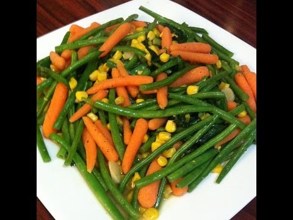

Welcome to Blog
780 ideas de Recetas de comida en 2021 | recetas de comida, comida, recetas
2021.07.06 18:06Recetas de comida
Collection by Teresa Galvan • Last updated 8 weeks ago
781 Pins • 465 Followers 0:37 Healthy Snacks Healthy Recipes Deli Food Salmon Recipes Pork Recipes Seafood Recipes Food Videos Mexican Food Recipes Drink RecipesHuevos Rellenos con Guacamole
Ya es hora de actualizar los clásicos Huevos Rellenos y transformarlos en algo INCREÍBLE
1:03 Tasty Videos Food Videos Buzzfeed Tasty Cooking Recipes Cooking Games Cooking 101 Oven Cooking Cooking Light Cooking ToolsCordon Bleu de pollo al horno con salsa de champiñones
Cambia el menú de hoy y lúcete con esta fácil receta de Cordon Bleu de pollo al horno, ¡te fascinará su bañado de salsa de champiñones!
1:14 Tasty Videos Food Videos Mexican Food Recipes Dinner Recipes Comida Diy Deli Food Cooking Recipes Healthy Recipes Cooking BeefPechugas Rellenas en Salsa Chipotle
· 42 reviews · 90 minutes ·Unas jugosas y ricas pechugas de pollo rellenas de queso amarillo, que están envueltas en crocante tocino que resalta el sabor y acompañadas de una cremosa y picosita salsa de chipotle. ¡Las pechugas rellenas en salsa de chipotle son sensacionales para cualquier ocasión!
1:38 Classic Lasagna Recipe Soul Food Lasagna Recipe Best Lasagna Recipe Pioneer Woman Best Easy Lasagna Recipe Ground Beef Lasagna Recipe Authentic Italian Recipes Easy Lasagna Recipe With Ricotta Vegetarian Recipes Healthy Cooking RecipesClassic Lasagna
A classic Lasagna recipe - everyone should have this recipe in their collection!
0:37 Casserole Recipes Pasta Recipes Chicken Recipes Kitchen Recipes Cooking Recipes Healthy Recipes Oven Cooking Budget Cooking Cooking CakeESPAGUETI A LOS 3 QUESOS
Nuestra media crema Nestlé es el ingrediente principal para que esta receta de espagueti sea perfecta, sirve con pequeños trozos de aguacate. ¡Te encantará!
1:00 Authentic Mexican Recipes Authentic Food Mexican Chile Verde Recipe Carne Con Chile Recipe Best Chili Verde Recipe Authentic Chili Verde Recipe Pork Chili Verde Menudo Recipe Authentic Carne Guisada Recipe MexicanChile Verde Recipe
· 182 reviews · 3 hours ·This Mexican Pork Chile Verde is made of tender pieces of pork simmered in a flavorful tomatillo and chile broth. Serve in a bowl or with a side of rice for an authentic Mexican meal! (low carb, gluten free, paleo)
0:58 Tasty Videos Food Videos Mexican Food Recipes Italian Recipes Kitchen Recipes Cooking Recipes Easy Dinner Recipes Easy Meals Traditional LasagnaLasaña tradicional casera
¡Fácil! Prepara este clásico platillo italiano con esta práctica receta de Lasaña tradicional totalmente casera, ¡perfecta para consentir a la familia!
0:53 Authentic Mexican Recipes Mexican Food Recipes Pork Recipes Chicken Recipes Cooking Recipes Oven Cooking Cooking Icon Cooking Torch Cooking EggsVideo de Carne de Cerdo en Salsa Morita con Papas
· 9 reviews · 100 minutes ·Este delicioso guisado de carne de cerdo con su picosita y deliciosa salsa de chile morita, será el platillo favorito de tu familia. Disfruta de este delicioso platillo mexicano, acompañado de un esponjoso, suave y rico pan de caja.
2:20 Buzzfeed Food Videos Buzzfeed Tasty Mexican Cooking Mexican Food Recipes Cheesy Recipes Chicken Recipes Cooking Recipes Healthy Recipes Cooking GadgetsRollo de Pastor Envuelto en Tocino
Las mejores recetas de cocina - kiwilimon
0:47 Easy Healthy Recipes Healthy Cooking Easy Meals Cooking Recipes Crockpot Recipes Bread Recipes Cooking Hacks Burger Recipes Grilling RecipesAlitas de Pollo con Mango y Habanero
· 12 reviews · 70 minutes ·¿Antojo de alitas? Prepara esta receta, excelente para compartir con tus invitados, con su agridulce y picosito sabor a habanero, se convertirán en tus alitas favoritas, no podrás resistirte a comer sólo una, porque quedan muy jugosas y sabrosas.
0:49 Tasty Videos Food Videos Think Food Love Food Buzzfeed Tasty Deli Food Cooking Recipes Healthy Recipes Sausage RecipesBisteces en salsa verde con calabacitas
· 1 review · 45 minutes ·¡Fácil! Este es uno de los guisados más sencillos y clásicos de la cocina mexicana, checa cómo preparar Bisteces en salsa verde con calabacitas y ejotes.
1:07 Amazing Food Videos Tasty Videos Deli Food Cooking Recipes Healthy Recipes Food Cravings Thanksgiving Recipes Soul Food Mexican Food RecipesPapas a la Cerveza con Tocino
· 2 reviews · 90 minutes ·Jamás existirá mejor botana o guarnición, que una receta con papa, pero como sabemos lo versátil que puede ser este ingrediente, preparamos una opción muy original: receta de Papas a la Cerveza con Tocino. Estas papas son la mejor opción para una tarde de parrillada o para acompañar un jugoso corte de carne. Para cocinar esta receta con papa tienes que freírlas súper bien a fuego bajo durante un largo tiempo, esto hará que tengan buena textura pero que no se quemen.
1:10 Buzzfeed Food Videos Deli Food Tiny Food Cooking Recipes Healthy Recipes Creative Food Mexican Food Recipes Love Food The BestPollo al pastor
· 1 review ·Aprende a preparar un delicioso pollo al pastor con esta receta sencilla & fácil. Lleno de sabor, este pollo adobado te encantará.
0:56 Tasty Videos Food Videos Cooking Videos Cooking Classes Cooking Recipes Healthy Recipes Cooking Beef Cooking Rice Oven CookingMixiote de pollo con nopales
· 1 review ·Empapela una pieza de pollo con salsa para que se cocine, una fácil receta tradicional que amarás.
2:21 Tasty Videos Food Videos Cooking Time Cooking Recipes Buzzfeed Tasty Soul Food Food Dishes Mexican Food Recipes PozolePasta con Albóndigas al Chipotle
Las mejores recetas de cocina - kiwilimon
1:21 Best Baked Chicken Recipe Buzzfeed Tasty Healthy Meal Prep Miniature Food Salmon Recipes Creative Food Soul Food Food Videos Mexican Food RecipesSalmón en Salsa de Chile de Árbol
· 3 reviews · 2 hours ·Si eres vegano y te encantan los chiles rellenos, te enseñamos cómo hacer un Chile Capeado sin huevo, súper crujiente y con un terminado perfecto. Prepara este rico chile poblano relleno con verduras de la milpa como jitomate, calabaza y elote. Acompáñalo con un consistente caldillo. En esta ocasión te damos la receta para hacer un Chile Capeado Vegano, con el capeado sin productos animales para que no te limites de comer estos clásicos de la gastronomía mexicana.El capeado tradicionalmente…
Privacy